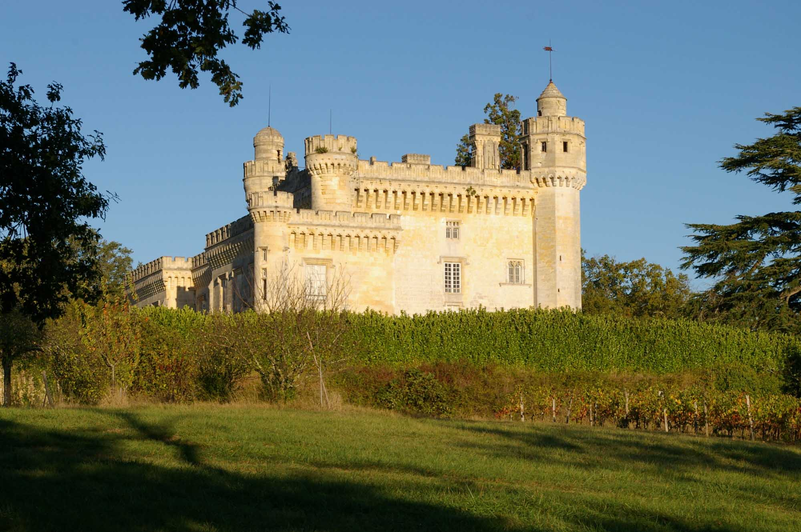

Passionnées par la vigne et le vin, les femmes du Château Doms sont viticultrices de mère en fille depuis cinq générations. Aujourd’hui, Hélène Durand et sa fille Amélie cultivent les vignes dans la tradition et élaborent des vins féminins.
La maison familiale, une magnifique chartreuse datant du XVII° siècle, qui fut jadis un monastère constitue le centre du domaine. Le vignoble de 28 hectares s’étend tout autour, sur une croupe graveleuse jouissant d’une exposition exceptionnelle pour la culture de la vigne.
Le Château Doms se situe au cœur de la région des Graves, au sud-est de Bordeaux. Le sol caillouteux et sableux de cette région, associé aux cépages bordelais Merlot et Cabernet Sauvignon pour les vins rouges et Sauvignon et Sémillon pour les vins blancs caractérisent le précieux terroir de cette prestigieuse AOC du vignoble de Bordeaux.
Les vins des Graves, particulièrement ceux du Château Doms sont des vins de femmes : vins de caractère et d’élégance.
Entre tradition et innovation…
Le château Doms est une magnifique chartreuse datant du XVII° siècle. Une partie de cet ancien monastère a été convertie en chai au XVIII° siècle. Cette bâtisse abrite encore aujourd’hui les chais d’élevage et les chais à barriques. Leurs murs très épais confèrent à ces pièces une température et une hygrométrie naturelles quasiment constantes. Par ailleurs selon Hélène Durand, « travailler dans des chais où plusieurs générations se sont succédées ajoute beaucoup de magie au lieu ».
En 1995, un grand projet d’agrandissement et de modernisation a été entrepris : un nouveau chai de vinification et une salle de stockage des bouteilles ont été construits. Afin de préserver les bâtiments existants, une nouvelle aile a été bâtie. Aujourd’hui, le chai du Château Doms est un outil de travail très performant. Il dispose de toutes les innovations techniques (thermorégulation des cuves inox, pressoir à membrane...) nécessaires à l’élaboration de vin de qualité.